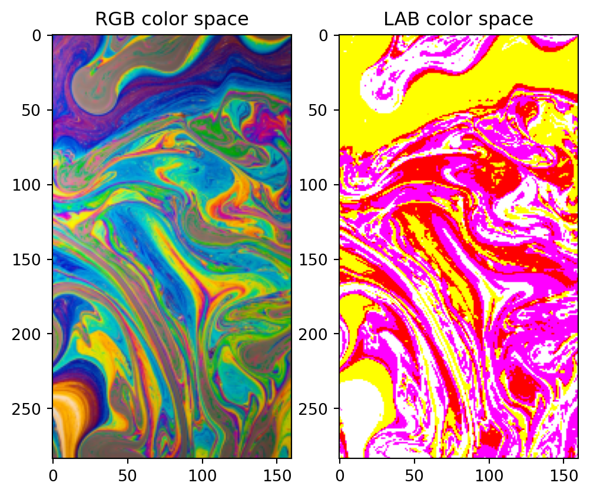

import matplotlib.pyplot as plt
import numpy as np
from skimage.io import imread
from skimage.color import rgb2lab, rgb2hsv
from skimage.transform import rescale, resize
# load the image
url = '../data/colors.jpg'
cimage = imread(url)
cimage = resize(cimage, (cimage.shape[0] // 4, cimage.shape[1] // 4),
anti_aliasing=True)
# convert the image from RGB to LAB
lab_img = rgb2lab(cimage)
fig, ax = plt.subplots(1, 2, figsize=(6,10))
ax[0].imshow(cimage)
ax[0].set_title('RGB color space')
ax[1].imshow(lab_img, cmap='gray')
ax[1].set_title('LAB color space')
plt.show()Clipping input data to the valid range for imshow with RGB data ([0..1] for floats or [0..255] for integers).